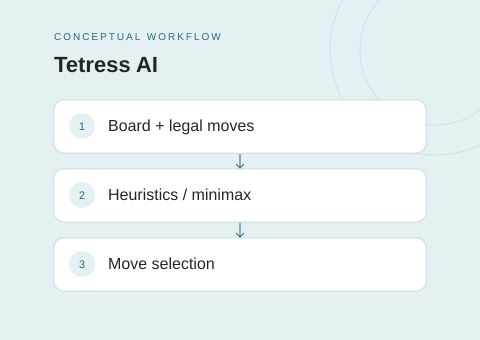

The idea
This case study groups two related academic projects around Tetress. One searches for a sequence of moves in a single-player setting; the other selects actions against an opponent. Together they explore how decision-making changes when another player can respond.
Project scope
- Generate candidate placements and update board state.
- Score single-player search paths using custom heuristics and path cost.
- Use a minimax-based agent for competitive play.
- Vary competitive search depth according to the game state.
Technical approach
The single-player repository implements priority-based heuristic search over board configurations. The competitive repository adds opponent-aware minimax reasoning. Combining them here makes the progression from planning to adversarial decisions easier to follow without presenting overlapping repositories as unrelated products.
Scope & limitations
The game is Tetress, rather than conventional falling-block Tetris. No optimality, competition ranking, or verified benchmark claim is made. The two repositories retain their own source code and reports.